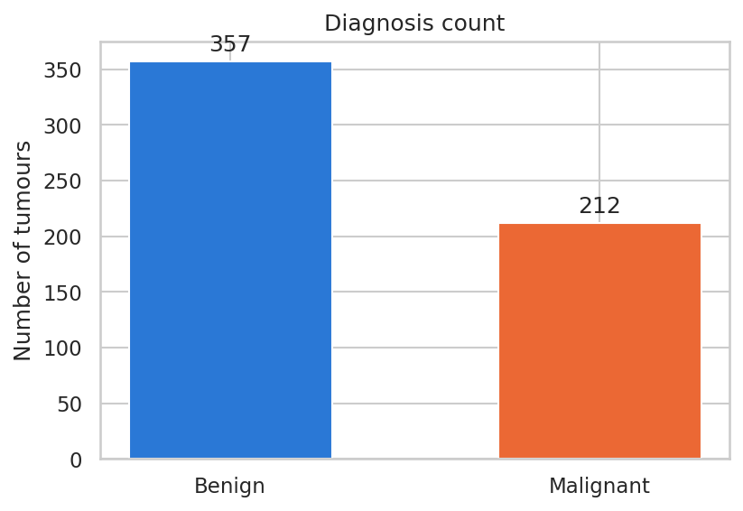
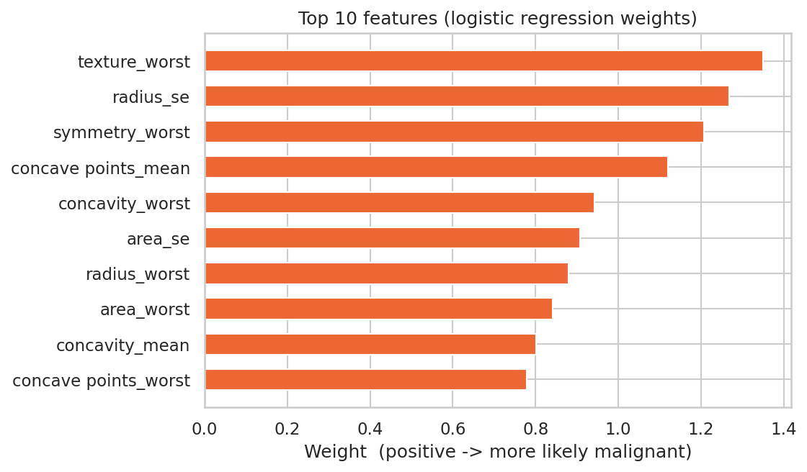
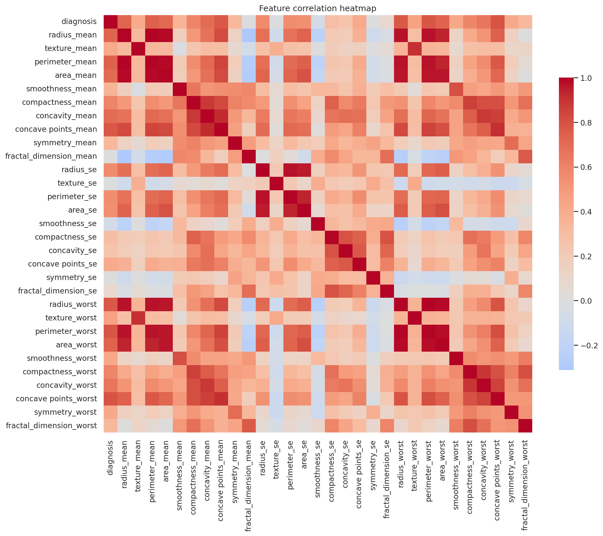
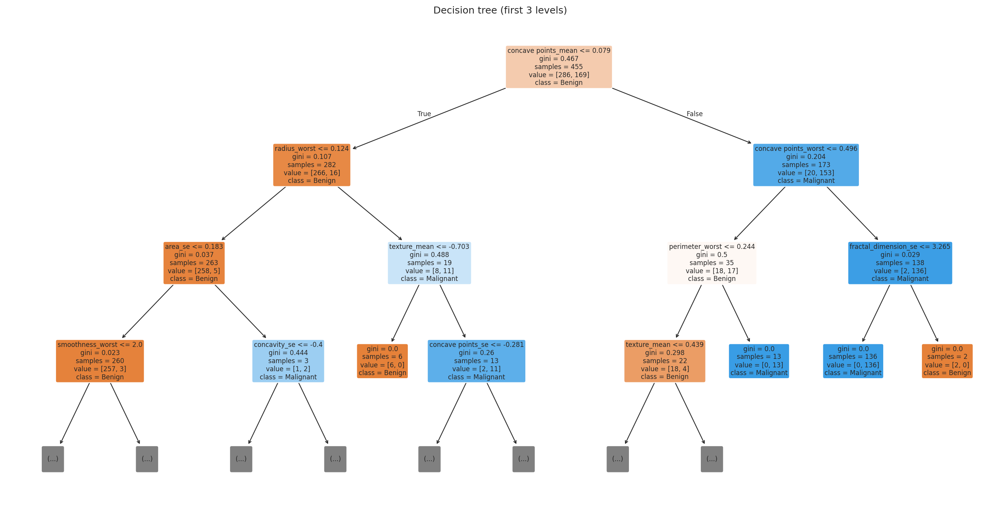

Telling benign from malignant tumours with machine learning
Four models trained on 30 cell-nucleus measurements from the Wisconsin Diagnostic Breast Cancer dataset. Logistic Regression comes out on top, correctly classifying 111 of 114 unseen tumours.
Educational project only. This is a student machine-learning exercise on a public research dataset. It is not a medical device and must not be used to diagnose anyone.
How it works
A standard supervised-learning pipeline in Python with pandas and scikit-learn.
Results
Accuracy on the 114 test tumours the models never saw during training. Hover a bar for details.
Test accuracy by model
Bars start at 0%. All four models score above 94%.
Logistic Regression: confusion matrix
Only 3 mistakes out of 114.
Benign
Malignant
Benign
Malignant
| Model | Accuracy | Precision | Recall | F1 |
|---|
Precision, recall and F1 are for the Malignant class. Recall matters most here: it is the share of malignant tumours the model catches. Linear Regression is included only for comparison; its output is turned into a class with a 0.5 cut-off (R² 0.727, MSE 0.064).
Try the model
The trained Logistic Regression model runs right here in your browser. Pick one of the 114 test tumours, see the prediction, then move the sliders to see how the measurements change it.
Uses all 30 measurements; the sliders change the 4 with the largest model weights. For learning only, not a diagnosis.
Charts from the analysis
Generated by breast_cancer.py and saved in the images/ folder.




Run it yourself
git clone https://github.com/aditi27003/Breast-Cancer-Prediction.git
cd Breast-Cancer-Prediction
pip install -r requirements.txt
python breast_cancer.py # prints metrics, saves charts to images/
Dataset: Wisconsin Diagnostic Breast Cancer (UCI Machine Learning Repository), 569 samples, 30 features.